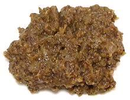

|
Recado de EscabecheMexico, Yucatán - Recado de Escabeche | ||||
| Makes: Effort: Sched: DoAhead: |
1/2 cup ** 25 min Yes |
The name implies this seasoning paste is for escabeche (vinegared stews), but it is also widely used as a general purpose seasoning, particularly with chicken, and some soups. | |||
|
----- 1 2 10 1/8 1 1/2 ----- 1 5 |
--- in T t t t --- oz |
-- Spices Cinnamon stick (1) Peppercorns, black Cloves Cumin seeds Oregano, dried (2) Salt ---------- Heads Garlic (3) Onion |
Make - (25 min)
|